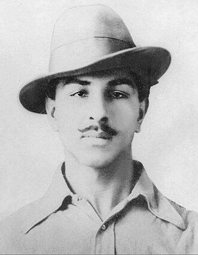

Early Life and Education
Bhagat Singh was born on September 28, 1907, in Banga, Punjab, British India. He was the third son of Sardar Kishan Singh and Vidyavati. Bhagat Singh was drawn to the Indian independence movement at a young age and was influenced by the ideas of Mahatma Gandhi.
Bhagat Singh was a bright student and was admitted to the DAV College in Lahore, where he came into contact with other revolutionaries and began to participate in the Indian independence movement.
Achievements and Contributions
- Founded the Hindustan Socialist Republican Association (HSRA) to fight for Indian independence
- Participated in the Lahore Conspiracy Case and was sentenced to death
- Wrote several books and articles on Indian independence and socialism
- Popularized the slogan "Inquilab Zindabad" (Long live the revolution)
Inspirational Quotes
"They may kill me, but they cannot kill my ideas. They can crush my body, but they will not be able to crush my spirit."
Read more about Bhagat Singh's life and legacy on Wikipedia.